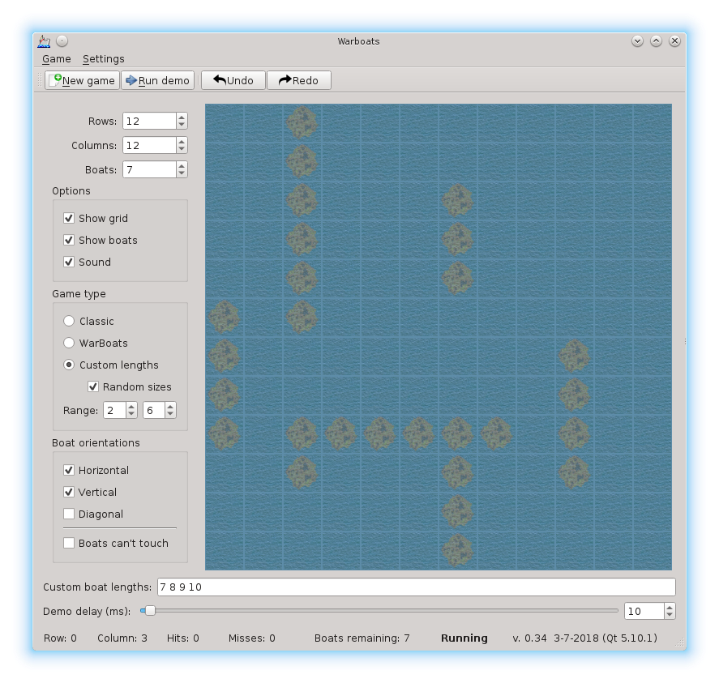
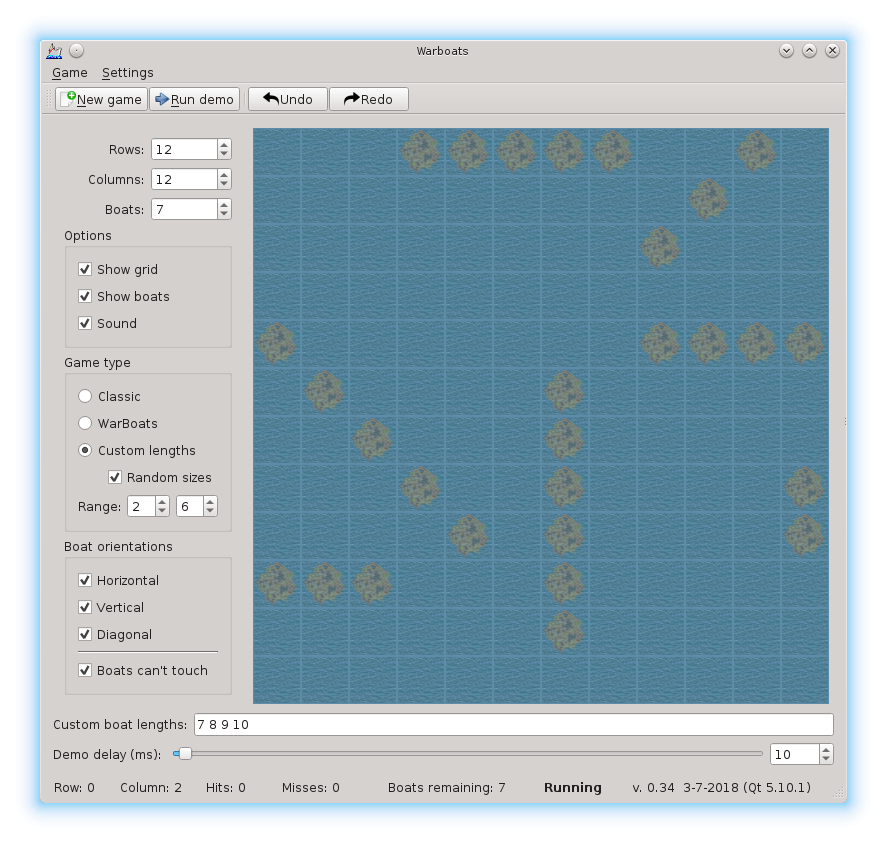

As I had discussed in class last week, I've decided to make the 4 practice assignments
into an extra credit assignment worth 100 points. This is an opportunity for students
that may not have done as well as they would have liked on the first two WarBoats
assignments to demonstrate that they really can do the work. Or, for those that did do
well, this is a chance to get over 100% on the assignments.
There are no drivers or sample files for the
assignment because all of that stuff is already available with the 4 practice
assignments (linked below).
In order to receive any extra credit, you MUST at least have a fully-functional
Assignment #2 (WarBoatsOO). You will use that as a starting point to
implement all of the additional functionality. Because this is extra credit,
very little partial credit will be given. If you did "mediocre" work on the
first two assignments, and then turn in another "mediocre" extra credit, I don't
intend to give you an "exceptional" score because of that. This extra credit
assignment is for you to prove to me that, yes, in fact, you actually CAN do the
work that is specified, given an extra amount of time. This means that any tablen
problems or Doxygen problems or memory corruption will almost certainly invalidate
your work. These problems are trivial to detect and trivial to fix. Turning in
code that contains these problems just shows me that you really don't care and
I will disregard your submission.
All of Mead's extra credit assignments (in any course) are a way for you to show
me that, "Yeah, I may have messed up some things in the past, but now I'm here
to show you that I *really* do know how to do this stuff and I'd like you to consider
giving me a better grade." I've given extra credit in higher-level courses, and
those assignments are significantly more complicated than this extra credit assignment.
The due date/time is Sunday, March 22, 2020 at 10:00 pm. This gives you the entire
week of Spring Break to work on it, if you so choose.
Information
warboats test_num use_diagonals force_space
GNU:g++ -Wall -Wextra -Werror -O -ansi -pedantic -Wconversion -o gnu driver-sample.cpp Ocean.cpp PRNG.cpp
There is much more on those pages including detailed information, driver test cases, and sample output. You may want to implement all of the modifications using the practice drivers to begin with.
This means that if the server accepted your submission, there is no guarantee that you will get credit for it until the TAs verify your code. If the server accepts it, it just means that you have passed phase one of the grading process.
Screenshots
The GUI program below requires a couple of slight modifications to your Extra Credit WarBoats
assignment. If anyone that has completed the extra credit and would like to attempt to build
their WarBoats using the GUI "driver" shown below, send me an email with that request.
Adding the few additional lines of code is not going to be a problem.
However, the bigger problem may
be in your knowledge of Windows (or Linux or Mac for that matter) because you have to install
and configure a very sophisticated tool called
QtCreator. It's free for personal use
and for developing Open Source projects. It's also available on Linux, Mac, and Windows.
You can download it and install it on your own computer and take a look for yourself.
I'm hoping to write up a few notes about it in the not-too-distant future and will
post them here.
This image below shows 7 boats of various sizes. They are only placed vertically and horizontally. There is no extra space required between the boats.

This image below shows 7 boats of various sizes and includes boats placed diagonally. There is also extra space between the boats.
